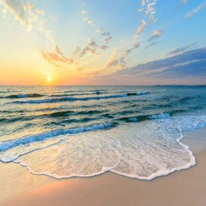

Projeto Saúde e Bem-Estar
Atualmente estou focada em melhorar minha qualidade de vida por meio do emagrecimento e equilíbrio emocional.
"Quem tem Iemanjá como mãe, tem um mar de proteção!"
Olá, me chamo Tamires, sou natural de Pelotas/RS. Atualmente tenho 33 anos, sou apaixonada pelo mar, gosto de viajar, ouvir música, andar de bicicleta, aprender algo novo, adoro ver vídeos no YouTube, tenho muita fé em Deus, mas sou apaixonada por Yemanjá. Sou grata pela vida!
Atualmente estou focada em melhorar minha qualidade de vida por meio do emagrecimento e equilíbrio emocional.
Uma página pessoal para apresentar minha trajetória, habilidades e interesses profissionais.